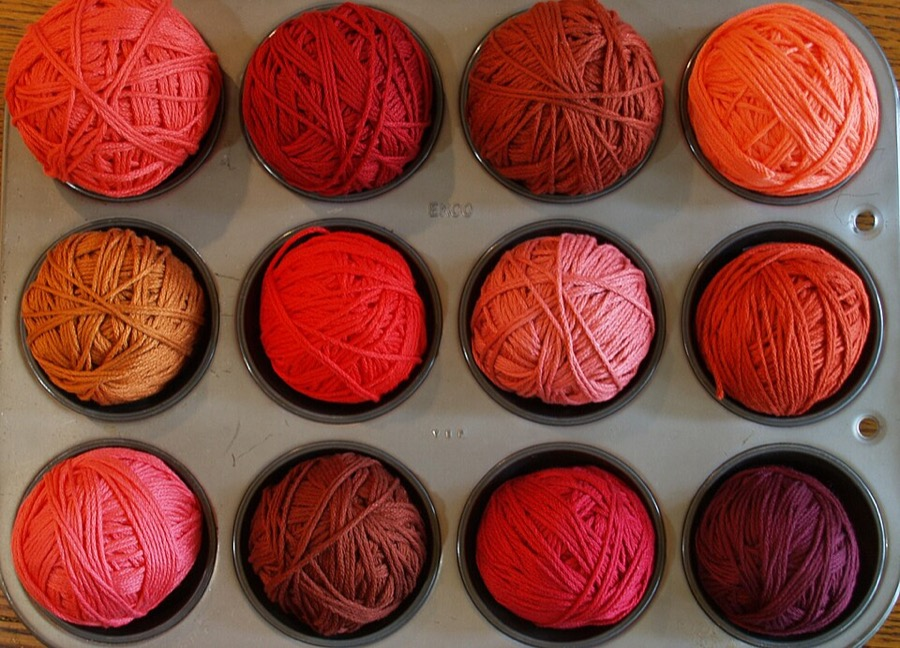
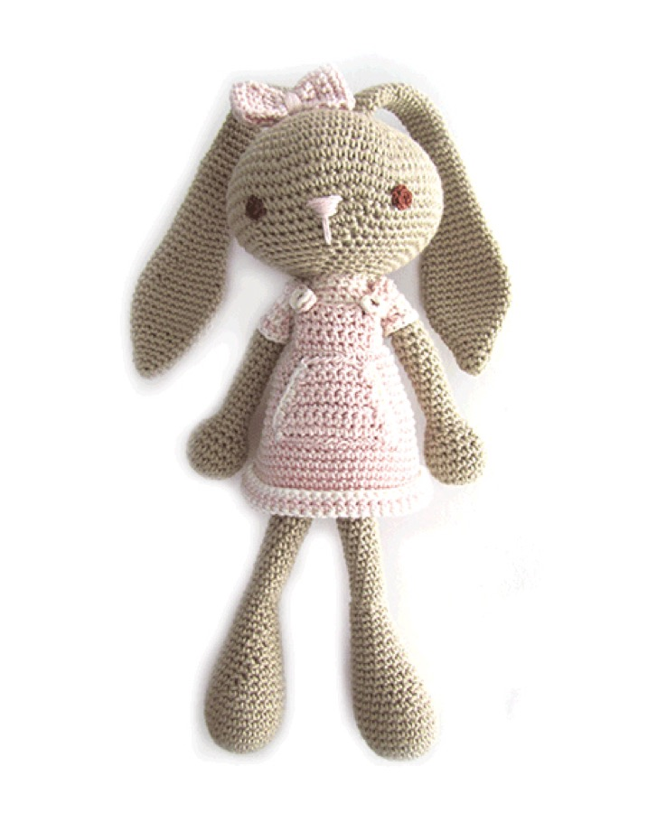
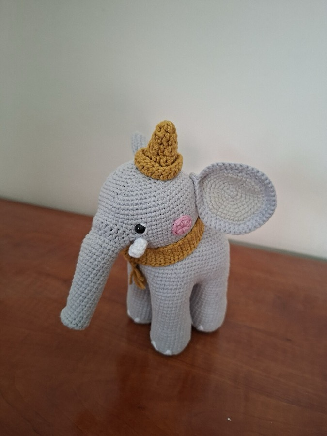
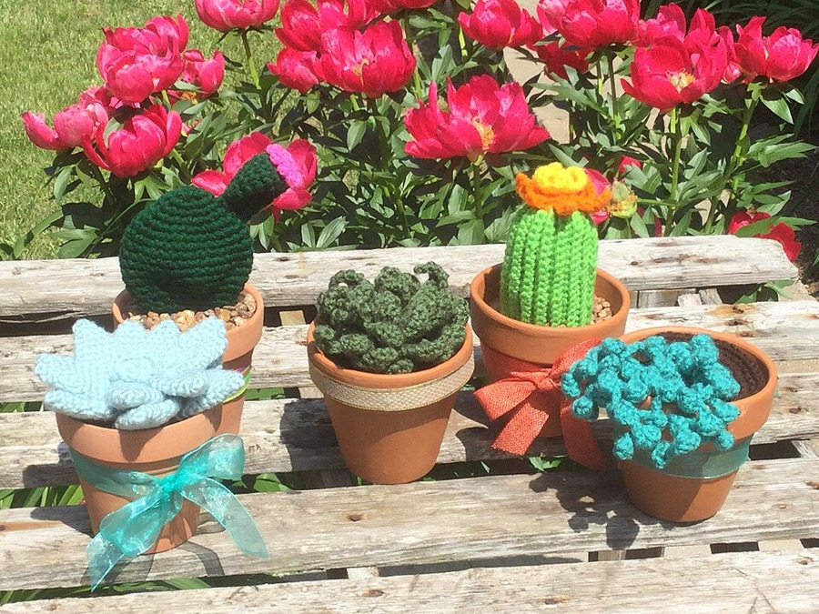
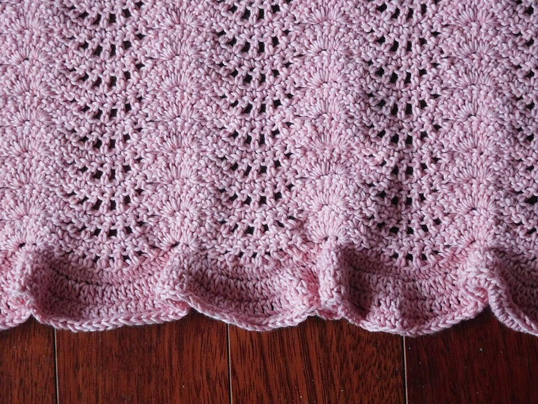

🧶 Cộng đồng những người yêu thích móc len
Chào mừng bạn đến với Lenly!
Không cần loay hoay kẻ ô hay tính toán đau đầu, chúng tôi giúp bạn tự động chuyển đổi ảnh sản phẩm thành chart móc len và công thức chi tiết chỉ với vài cú click.
Khám phá thư viện mẫu móc gợi ý từ cơ bản đến nâng cao, học từng bước cực kỳ dễ hiểu — kể cả người mới bắt đầu.


Được móc nên từ chính len thật
Một vài thành phẩm từ cộng đồng — nguồn cảm hứng cho mẫu bạn sắp tạo.


